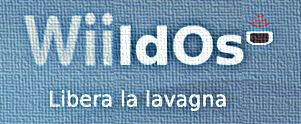

Il Linux Day Barletta 2013 si aprirà con una breve introduzione a Linux ed al software libero in generale. Parleremo, in questo contesto, delle innovazioni raggiunte in ogni campo trattato e forniremo nozioni di base per l'utilizzo dei sistemi operativi GNU/Linux in piena autonomia.
Se già conosci Linux, non preoccuparti, sarà interessante anche per te!
A seguire proporremo un installation party, durante il quale i partecipanti saranno guidati passo per passo nell'installazione di Linux Mint (una distribuzione GNU/Linux) sul proprio computer. In contemporanea, si terrà un piccolo workshop, che ti permetterà di apprezzare due casi di utilizzo molto particolari ed innovativi dei sistemi operativi basati su Linux.
Verranno presentati due prototipi realizzati interamente con l'utilizzo di software libero.
Per prima cosa mostreremo una lavagna multimediale interattiva di facile realizzazione ed utilizzo a bassissimo costo (di circa il 95% inferiore a quello delle lavagne multimediali commerciali). La lavagna utilizza una distribuzione GNU/Linux sviluppata in Italia: WiildOS

Presenteremo poi un progetto di domotica che fa uso del piccolo ed economico computer Raspberry Pi, dal costo di circa 25€, interfacciato con un cellulare Android. Illustreremo con un semplice esempio le potenzialità di questo sistema, dai costi molto inferiori rispetto agli equivalenti commerciali.
Se hai intezione di prendere parte all'installation party, segui le istruzioni che trovi alla pagina partecipazione, ci permetterai di seguirti meglio!
Ti aspettiamo, saremo al GOS a Barletta, sabato 26 ottobre, dalle 17:30.